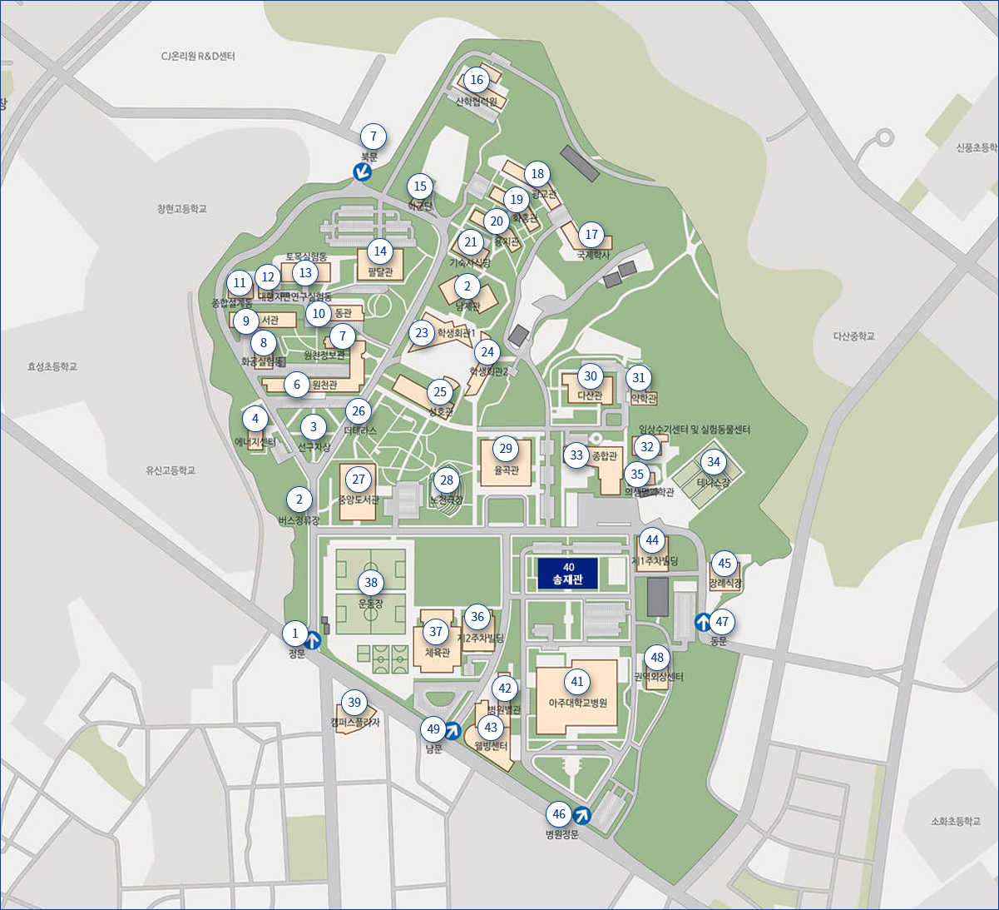

오시는 길

| 1 정문 | 13 토목실험동 | 25 성호관 | 37 체육관 |
| 2 버스정류장 | 14 팔달관 | 26 더테라스 | 38 운동장 |
| 3 선구자상 | 15 학군단 | 27 중앙도서관 | 39 캠퍼스플라자 |
| 4 에너지센터 | 16 산학협력원 | 28 노천극장 | 40 송재관 |
| 5 원천관 | 17 국제학사(기숙사) | 29 율곡관 | 41 아주대학교병원 |
| 6 원천정보관 | 18 광교관(기숙사) | 30 다산관 | 42 병원별관 |
| 7 북문 | 19 화홍관(기숙사) | 31 약학관 | 43 웰빙센터 |
| 8 화공실험동 | 20 용지관(기숙사) | 32 임상수기센터 및 실험동물센터 | 44 제1주차빌딩 |
| 9 서관 | 21 기숙사식당 | 33 종합관 | 45 장례식장 |
| 10 동관 | 22 남제관(기숙사) | 34 테니스장 | 46 병원정문 |
| 11 종합설계동 | 23 학생회관1 | 35 의생명과학관 | 47 동문 |
| 12 대형지반여구실험동 | 24 학생회관2 | 36 제2주차빌딩 | 48 권역외상센터 49 남문 |